Vestiaire Collective
Passé une vingtaine d’annonces, les vendeurs oublient des pièces, créent des doublons et gèrent « au hasard ». J’ai repensé l’espace vendeur de l’app pour les aider à retrouver, trier et relancer leurs annonces, jusqu’à les regrouper en lots.
Analyse des avis (stores, Trustpilot, Reddit…), benchmark, 4 entretiens et 3 tests utilisateurs, codage et affinity mapping.
Priorisation des insights, HMW et critères de succès, idéation, matrice impact / effort et user flows.
Refonte de l’espace vendeur et de la gestion des annonces, dans l’esthétique éditoriale de la marque.
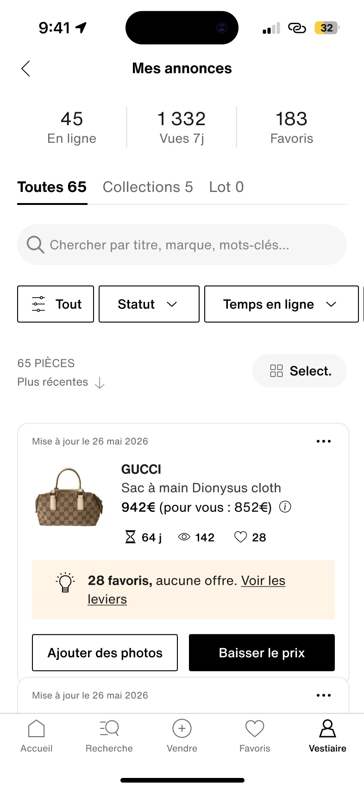
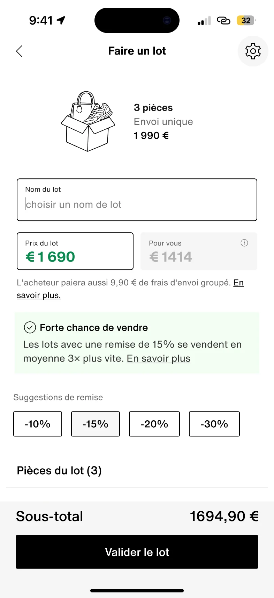
Contrainte majeure : une annonce publiée n’est plus modifiable, sauf pour ajouter des photos ou changer le prix. Chaque annonce est vérifiée par l’équipe pour éviter les contrefaçons, et toute modification relancerait cette vérification.
Challenger le brief avant de dessiner
Le brief s’appuyait sur cinq verbatims vendeurs : pas de gestion multi-articles, peu de visibilité, pas de boost payant, une navigation difficile dans ses ventes, pas d’achat groupé. Trois sur cinq portent sur la gestion et la navigation.
Pour les confronter au réel, j’ai croisé les avis de six sources (App Store, Google Play, Trustpilot, Twitter, Reddit, SmartCustomer) et comparé 10 plateformes sur 10 axes de gestion vendeur.
Sur 10 axes de gestion vendeur, Vestiaire Collective n’en couvre qu’un seul, et un autre en partie.
Recherche et filtres dans son vestiaire, actions groupées, lots : des standards chez Poshmark, eBay ou Mercari, absents ici.
Trois signaux forts dans les avis
Patterns de gestion repérés chez eBay, Zalando, Facebook Marketplace et ControlResell.
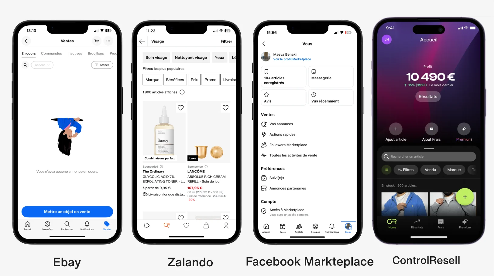
Interviews utilisateurs
Les objectifs :- Comprendre comment les vendeurs suivent et gèrent leur ensemble d’annonces
- Identifier les leviers utilisés, ou non, pour faire aboutir une vente qui stagne
- Comprendre comment se prennent les décisions de prix et de négociation
Des vendeuses particulières, de 5 à 50 articles sur Vinted ou Leboncoin. Une cible proxy pour le segment « Engaged » (10 à 100 annonces, 30 % de l’offre), le plus sous-outillé.
Ce que j’ai appris
Elles préfèrent se débarrasser d’un article plutôt que d’en tirer de l’argent.
Créer l’annonce est le principal coût en temps.
Passé une vingtaine d’articles : oublis, doublons et scroll sans fin.
Elles pilotent à l’aveugle : beaucoup de favoris, aucune vente.
Les offres trop basses sont vécues comme un manque de respect.
Elles craignent l’arnaque et doutent de la protection en cas de litige.
Passé une vingtaine d’articles, le vendeur perd le contrôle de son catalogue : il oublie des pièces, crée des doublons, gère « au hasard ».
Je l’ai retenu parce qu’il est le nœud des autres : ce décrochage nourrit l’abandon des ventes, masque les signaux d’intérêt et entretient le sentiment de ne rien maîtriser.
3 / 4 perdent le fil passé ~20 articles, 2 / 4 n’ont aucun système de suivi.
Codage et affinity mapping des 4 entretiens dans FigJam : vendre pour se débarrasser, effort de mise en vente, gérer son stock, arnaque, réputation, prix, lots.
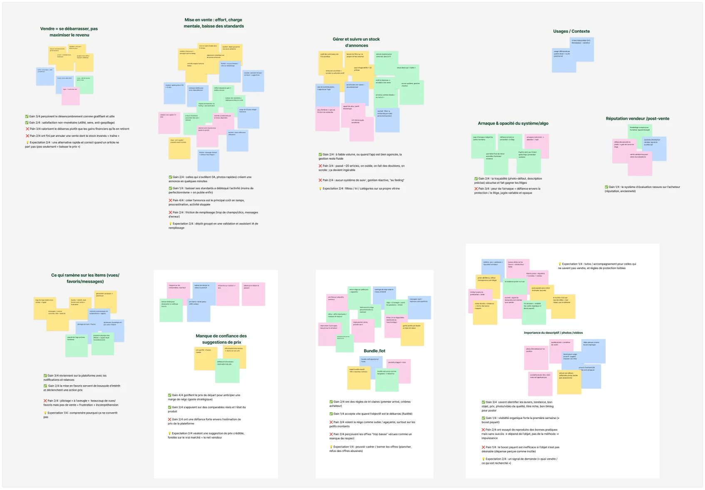
Comment aider les vendeurs à garder le contrôle de leur catalogue et à le gérer activement dans le temps ?
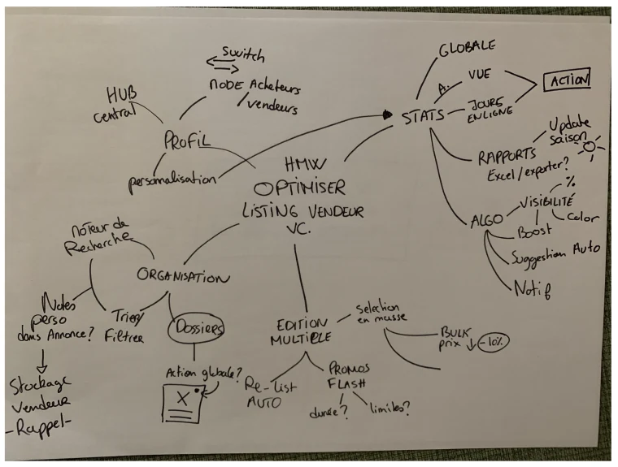
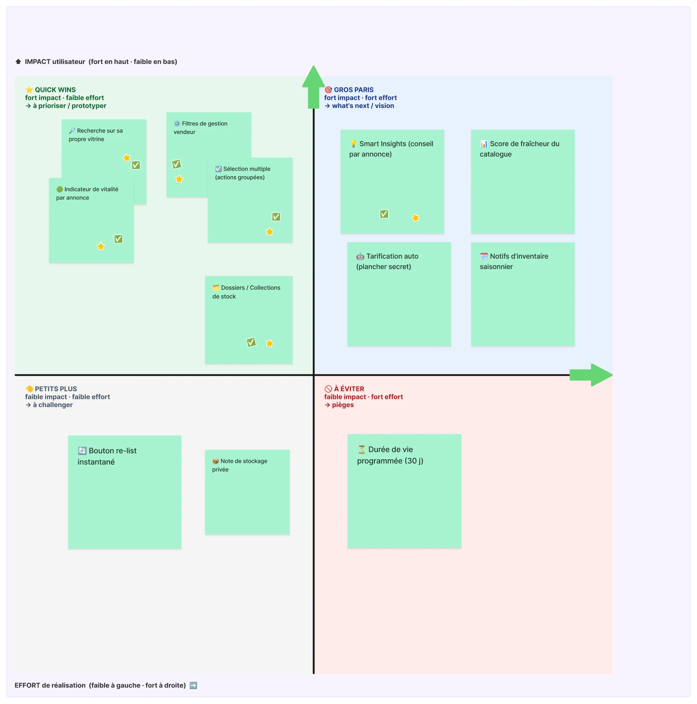
- Espace vendeur centralisé
- Recherche dans sa vitrine
- Indicateur de vitalité par annonce
- Sélection multiple
- Collections, avec des filtres de gestion
Les Smart Insights, un conseil par annonce, ont été testés comme gros pari. La durée de vie programmée des annonces a été écartée.
Le prototype V1 couvrait l’espace vendeur, la liste des annonces avec recherche, filtres et Smart Insights, la sélection multiple et la création d’un lot avec remise.
Vérifions nos hypothèses
Le scénario :- Trouver ses annonces
- Filtrer les actives, puis les plus populaires
- Créer un lot, puis le retrouver
Ce qui a marché
Tout sur une page
Elles trouvent directement leurs annonces et valorisent la lisibilité de l’espace vendeur.
La création du lot
Elles la jugent simple une fois sur le bon écran : cocher, choisir la remise, valider.
Ce qui a bloqué
Le problème n’était pas l’écran de création, mais l’accès à cet écran et ce qui se passe après.
« Collection » ne dit pas qu’elle contient les lots
Les trois lisent « collection » comme un classement par catégorie (chaussures, sacs, hauts).
Après création, le lot n’apparaît pas sur les annonces
Même la vendeuse la plus expérimentée ne retrouve pas son lot sans aide.
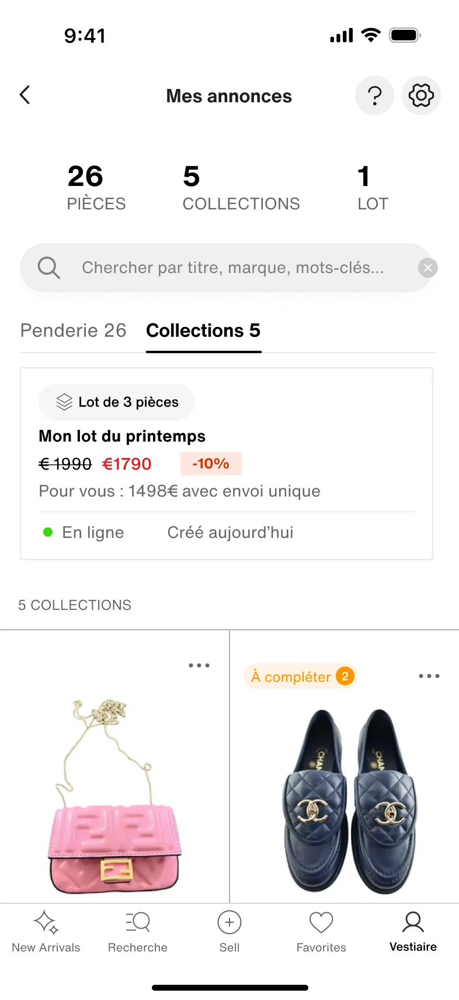
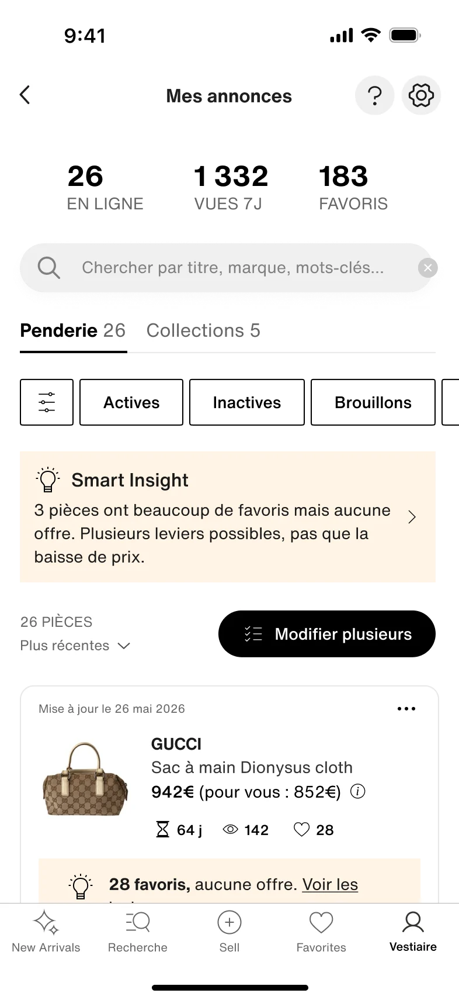
Filtrer puis sélectionner crée de la friction
Les trois ont tâtonné ou eu besoin d’un indice : l’icône du filtre est confondue avec « Modifier plusieurs ».
« Partager le lot » et Smart Insights restent flous
3 / 3 lisent « partager » comme l’envoi d’un lien à des proches, et une testeuse pense que le bouton crée le lot. 2 / 3 repèrent Smart Insights, mais son sens et son interaction restent flous.
Retrouver, trier, relancer : un catalogue qu’on garde en main
L’idée
Conserver ce que les testeuses ont apprécié, la lecture « tout sur une page » et la création de lot, et corriger l’accès, le vocabulaire et le suivi après coup.
Cinq adaptations :
- Un espace vendeur plus direct
- Des filtres séparés de la sélection
- Un onglet Lot, visible sur chaque annonce
- Créer puis partager : deux gestes distincts
- Un conseil par annonce, avec une action derrière
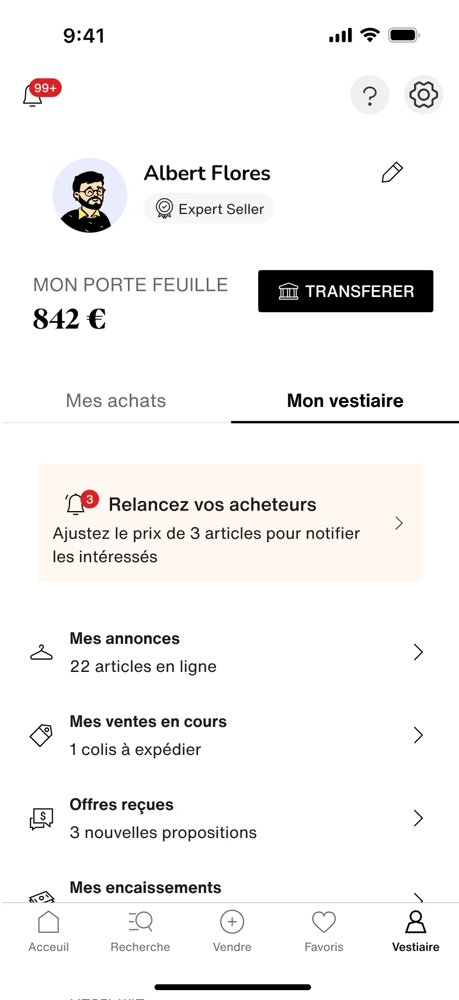

Sous « Mon vestiaire », les onglets deviennent « Mes achats » et « Mes ventes », sans doublon de libellé. Le portefeuille, un concept trop nouveau, disparaît au profit des encaissements. En tête, une alerte invite à relancer les acheteurs intéressés.
« Penderie » devient « Toutes ». Les filtres (statut, temps en ligne, visibilité) forment une barre à part, et la sélection passe par un bouton « Select. » distinct. Le filtre complet trie par statut, catégorie, marque, prix et taille.
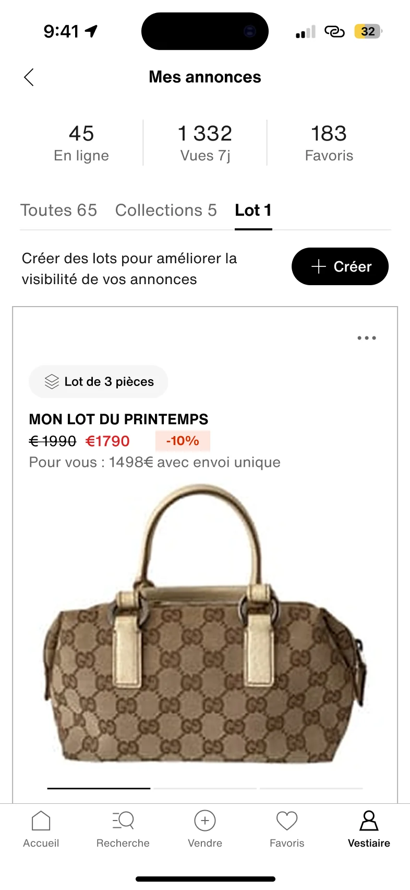
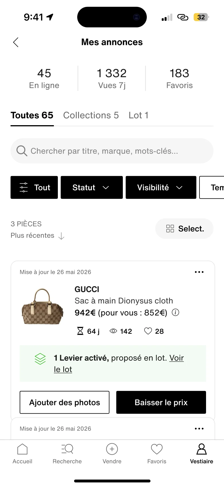
Les lots ont maintenant leur propre onglet, séparé des collections. Chaque article concerné affiche « 1 levier activé, proposé en lot », avec un lien direct vers le lot.
Version finaleLa confirmation montre d’abord le lot créé : son numéro, son prix et ce que touchera la vendeuse. Le bouton devient « Partager le lien du lot », pour lever toute confusion avec la création.
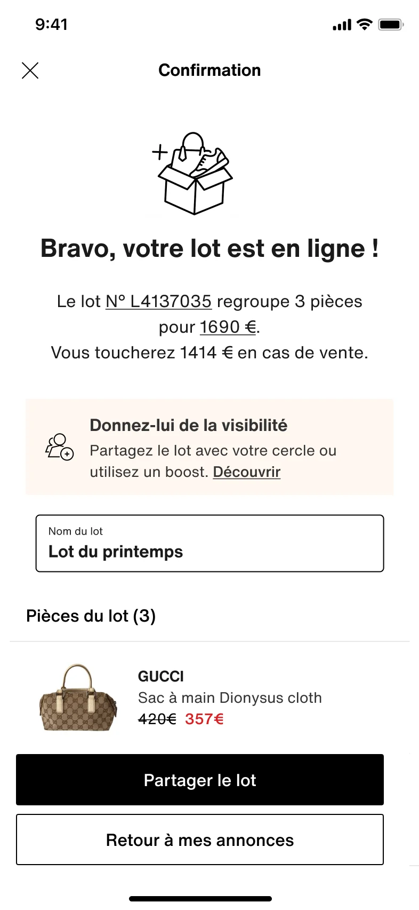
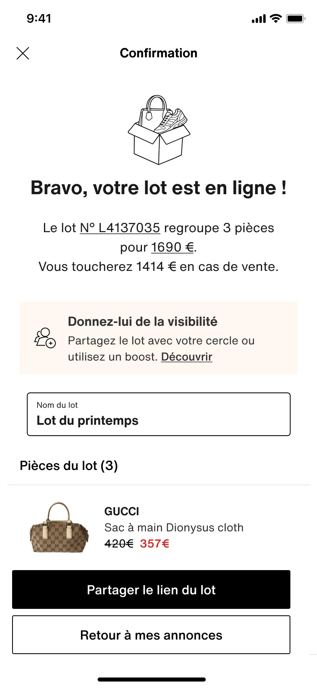
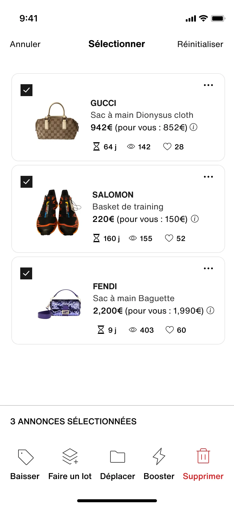
Le diagnostic quitte le haut de la page pour vivre sur chaque annonce (« 28 favoris, aucune offre. Voir les leviers »). Depuis la sélection, on baisse le prix, fait un lot, déplace, booste ou supprime plusieurs annonces d’un coup. La création de lot suggère une remise et rappelle les frais d’envoi groupé payés par l’acheteur.
Version finaleUn catalogue mieux contrôlé, mis à jour plus souvent, sans annonces oubliées. Donc plus de ventes organiques et des vendeurs réactivés.
« Comment aider les vendeurs à garder le contrôle de leur catalogue et à le gérer activement dans le temps ? »
Les critères de succès (time-to-sell, fréquence de gestion, annulations) restent à mesurer en conditions réelles.
Le vocabulaire fait partie de l’interface : « collection », « penderie » ou « partager » ont suffi à égarer des utilisatrices pourtant à l’aise.
Une fonctionnalité doit aussi se retrouver après coup : la création de lot était simple, c’est sa trace dans les annonces qui manquait.
Prioriser l’insight qui conditionne les autres permet d’agir sur plusieurs problèmes à la fois.
Et ensuite ?
- Tester la version finale avec de vrais vendeurs Engaged et semi-pro, sur des comptes avec beaucoup d’articles.
- Mesurer le time-to-sell, la fréquence de gestion et la réactivation des annonces dormantes.
- Explorer les gros paris : score de fraîcheur du catalogue, notifications d’inventaire saisonnier.